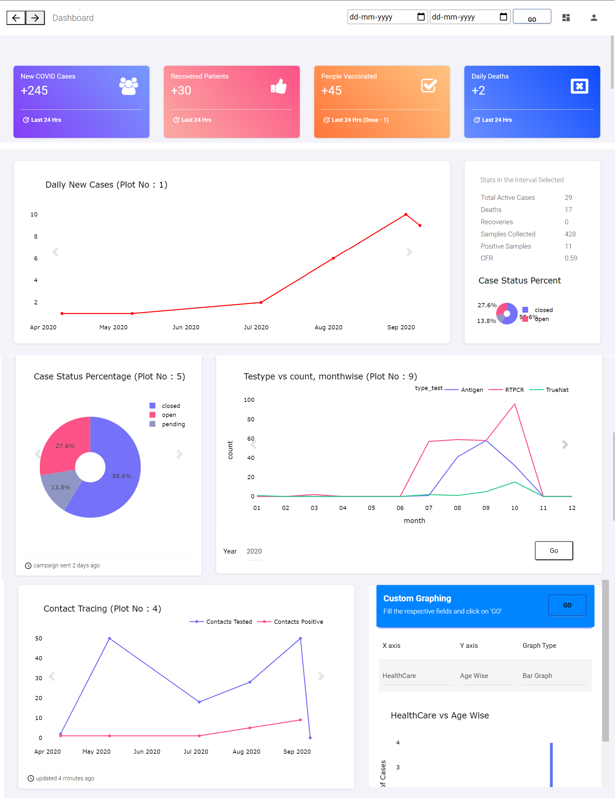
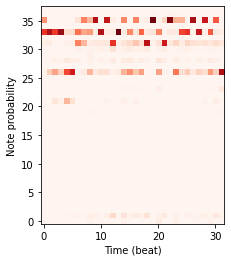
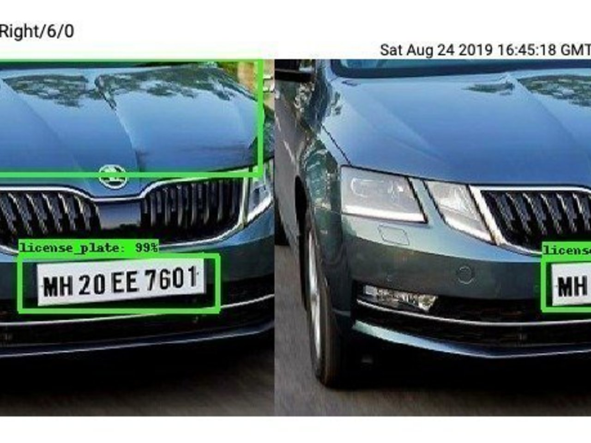
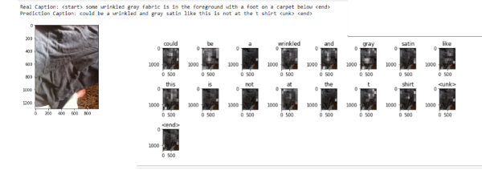
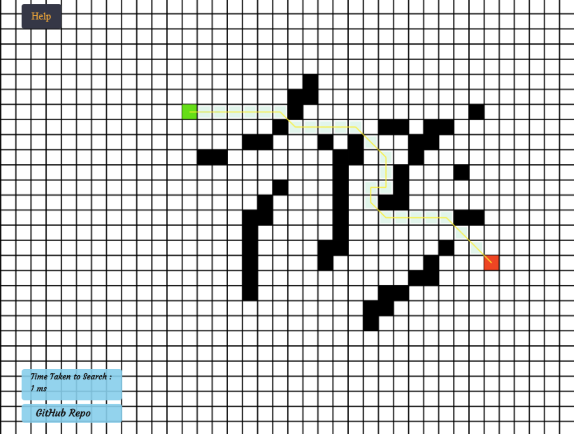

Multi Agent Human-AI Teaming
B.Tech Project under guidance of Dr. Shashi Shekhar Jha
With Accenture Technology Labs
Formulate a multi-agent single human teaming problem with codependency to achieve a common goal with the aim
of increasing the team utility. Developed and tested suitable use case to capture teaming aspects of human with AI
agents.

Developed a fully functional interactive dashboard for state administration using Flask
framework.
Department and Rank System: Departmental heirarchy with Covid-19, Judiciary, Police and
Schemes
dashboards, with rank based user access to different parts of Dasboard.
Real-time graphing and Analysis: Time Interval Filtering, region filtering and many other
data-specific
options to analyse data pictorially.
Emotion based Music Generation using Reinforcement Learning

Trained LSTM on MIDI files and further used Q-, Psi- and G- learning to fine tune the learned RNN
parameters using varying reward functions
for two emotions- happy and sad. The rewards were adapted from Music Theory.
Vehicle Number Plate and Face Recoginition Attendance System

Attendance system, which automatically identifies driver information using face recognition and number
plate using number plate detection.
Developed using Django backend and React.js frontend.
Image Captioning for the Blind

Used an InceptionV3-LSTM Encoder-Decoder system with Bahdanau Attention to caption images clicked by the
Blind in their everyday lives, thus, often being blurred and unclear. Implemented several techniques for
Captioning
with this performing best.
Microsoft Engage 2020- Mars Rover

Implemented IDA* Search with obstacles on a grid between a start and end point. Also worked on developing
the interface of the web-app.

Developed a portal for Railway Administration with Database optimisation. The portal allows addition of
same train with different number and types of coaches
on different dates and allows for multi-agent registration to book tickets and generate pnr, if seats
available.
Pipelined RISC-V ISA Simulator
Developed pipelined RISCV-ISA simulator for parallel instruction execution with dataforwarding, bit
prediction and inter-state caches.
Developed an emotion recognition and classifier system on non-posed images of people on 6 emotions.
Given news pieces and their headlines, developed an LSTM based news classifier, with vocabulary derived
from WikiText-103 to
categorise the news pieces under different subject headings.
A blogging website with user signup, login functionality, built on django. Project to experiment with
the django platform.